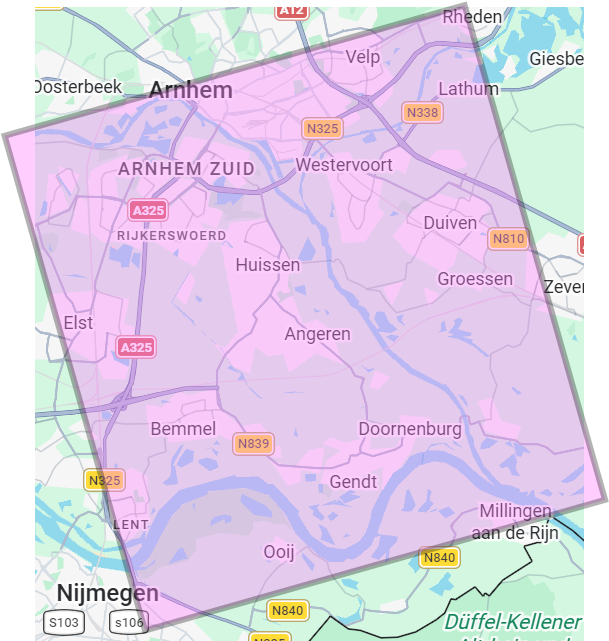
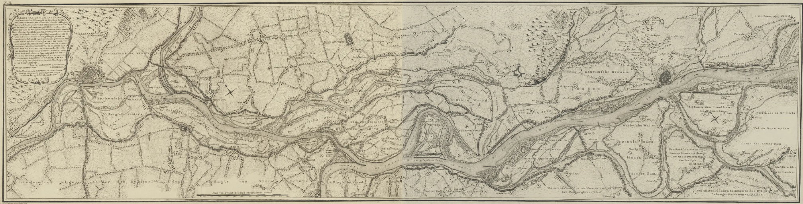

Digital Elevation Model Analysis
Mapping the Rhynstroom
The Dutch Government has every centimetre of the Netherlands mapped in detail. Using this publicly available data, I will compare an old map to modern data in a river natural environment.

Project Overview
This assignment uses digital elevation models provided by the Dutch government to illustrate the current elevation relative to the NAP (Normaal Amsterdamse Pijl). An old map is overlaid to compare the current elevation to the drawings of that time.
Methods
The analysis was performed in QGIS version 3.40, in which several steps were taken. First, a region of interest was selected in the OpenStreetMap standard map.
The coordinate system was set to 'Amersfoort / RD new'. Then, digital elevation models were downloaded using the 'PDOK services plugin'. The layers of the Digital Terrain Model (DTM)
and Digital Surface Model (DSM) were provided by the service 'Actueel Hoogtebestand Nederland (AHN)' which translates to 'current elevation file Netherlands'.
The DTM and DSM layers were styled. A duplicate layer of both models were rendered to 'hillshape' and stacked above the original layers, to create a shadow effect.
Then, an old map was found, georeferenced, and clipped to the region of interest. The two elevation layers and their shadows were clipped to the same region,
resulting in a squared area with 5 layers (DTM, DTM-shadow, DSM, DSM-shadow, old map). These layers did not have to be georeferenced, as they are all in the Amsersfoort coordinate system.
Using measurement tools in QGIS, the area was determined. In order to visualize the elevation, the DTM layer was given a colour ramp
and printed to a layout. In this layout, a title, a legend, scale bar, and north direction were added.
Region of Interest
Inspired by the old map hanging in the Geology Faculty building (figure 1), I have chosen a section of the Rhine-Meuse delta between Arnhem and Nijmegen (figure 2). The area covers
261,67 square kilometers.
In the archives of Utrecht University, a map drawn between 1784 and 1789 was found. The map is titled ‘Kaart van den Rhynstroom’ which translates to ‘Map of the Rhine current’.
It contains the riverbanks, shallow parts, gravel bed and sand bed and krib beds.

An old map of the Rhynstroom
It is a map of the Rhynstroom, published in 1790. It contains the riverbanks, shallow parts, gravel bed and sand bed and krib beds.
The measurements for the map were performed by H. van Straalen, J. Engelman, J. Sabrier and F.W. Conrad between 1784 and 1789.
The map is credited to J. Engelman making him the surveyor, as he compiled the map. The map was commissioned by
‘de Heeren Gecommitteerde Raden van de Staten van Holland en Westvriesland’, which is the Executive Council of the States of Holland and West Friesland,
under the direction of inspector-General C. Brunings.
The old map was overlaid diagonally over the new map, as the new map does not use data from Germany.
The area of the new map is around 210 square meters.

Results and Findings
Description
The map at the top of the page is a digital terrain model (DTM) of the area introduced earlier. A lighter colour indicates a larger elevation; a deep purple indicates the least amount of elevation.
There are a few things to note. First, the dikes visible in the old map can be recognised in the new map as thin light yellow lines. It is fascinating to me that these are still (mostly) intact almost 240 years later.
Something that did change is the land use. The old map shows many large fields surrounded by tree lines, while today most of this has been replaced by buildings, very small agricultural fields or industry.
Notable is also that fort that was visible in the old map, is no longer found in the satellite images of today. The elevation map does show that the fort location is at a higher elevation than the rest of the surroundings,
which is expected.
Speaking of buildings, there are large areas of low elevation to the east and to the west of the river, in which there are many buildings visible.
This may indicate that in the case of heavy rainfall locally or upstream, these regions may be sensitive to flooding. Finally, it seems that the sections of the river containing cribs have a high elevation value (yellow)
right by the river bank followed by a very thin line of purple, indicating a steep descent. In order to illustrate the elevation of a large area, while still comparing with the old map, I chose for a diagonal design of the final map as shown above.
An elevation model could not be created for the right hand side of the old map, as German data would be necessary for this. The colours were chosen in a manner that bypasses any unnecessary assumptions (e.g. red, blue or green).
The deep purple was chosen as the lower elevation as darker colours often spark the association of depth.
Skills used
First, I learned how to retrieve layers created by a specific service using the ‘PDOK services plugin. Georeferencing is also something I have learnt through this assignment, which is essentially accurately aligning spatial data to an existing coordinate system.
One of the main skills was georeferencing and clipping layers to the region of interest. In other words, making sure that each layer is topographically aligned to the base map, and then selecting the same area of each layer. This results in stacked layers, each
covering the same area.
Reflection
This assignment was one of the most difficult assignments of the course. While making the map, everything was fine and I had a lovely time finding old maps, trying to figure out where they were on Google Maps and which options were most
appropriate. An obstacle I did run into was the time it took to save the DTM files, this took quite a while. Besides this it was also challenging to pick the right colour scheme. Blue looked like water, red seemed bad, and green looked
like vegetation. After a long search of inversing colour ramps, creating my own or editing existing ones, I was content. Looking at the final result, I am quite happy with how it turned out.
Sadly, my OneDrive reached its storage limit of 100GB. This resulted in my map and layers not being saved! Luckily, I took a screenshot of the layout above which was still locally available on the PC. If I would still have the files I would
like to make interactive maps, such that users could select desired layers in order to see the differences more clearly. Moreover, the loss of my layers does mean that I did not have time to go back and remake the DSM and RGB layers thus no
maps are provided of this, my apologies.
Besides the importance of saving files correctly, my main take away from this assignment is the potential of publicly available data. As I still have at least one year of access to QGIS, ArcGIS and much more at Utrecht University,
I have the possibility to make whichever maps I would like using public data, I will make use of this opportunity! Over all, I enjoyed visualizing the elevation of a place I am familiar with, and comparing it to a map of almost 240 years old.
Project Details
- Course: GIS and Cartography
- Instructor: Britta Ricker
- Date: 18 June 2026
- Study Area:The Rhine-Meuse delta
Software & Tools
- QGIS 3.40
- OldMapsOnline.org
- PDOK services pllugin